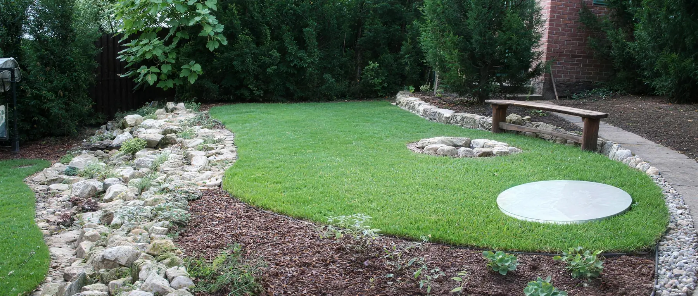

Megoldástípusok összehasonlítása
Ez a táblázat nem rangsor. A három megoldástípus más feladatra való, ezért nem az a kérdés, melyik a „jobb", hanem hogy melyik feltételeit tudja teljesíteni az Ön ingatlana — és melyik üzemeltetési feladatot vállalja el.

Mi alapján hasonlítunk
Nem az előnylisták hossza dönt
Három megoldástípus áll szemben egymással, és a legfontosabb különbség köztük nem egy tulajdonság, hanem a funkció: az egyik gyűjti a szennyvizet, a másik előkezeli és a talajra bízza a tisztítás nagy részét, a harmadik energiabevitellel ténylegesen megtisztítja.
Ezért nem lehet őket egyetlen sorrendbe állítani. Az összehasonlítás akkor hasznos, ha ugyanazokat a kérdéseket teszi fel mindháromnak — és a válaszból az derül ki, melyiknek a feltételeit tudja teljesíteni az adott ingatlan.
A hatályos szabályozás is külön fogalomként kezeli a három megoldást; a besorolás nem marketingkérdés, hanem jogi kategória.
Szempontok
Ugyanazok a kérdések mindhárom megoldáshoz
A sorok nem tulajdonságok, hanem döntési szempontok. Egy megoldás akkor jön szóba, ha minden sorban teljesíthető, amit az Ön ingatlana megkíván.
| Szempont | Zárt tároló | Oldómedencés rendszer | Aktív biológiai |
|---|---|---|---|
| Mit csinál a szennyvízzel | gyűjti és tárolja | oldómedencében előkezel, a tisztítás nagy része a tisztítómezőben, a talajban zajlik | energiabevitellel biológiai tisztítást végez |
| Villamos energia | nem igényel | nem igényel | folyamatos ellátást igényel |
| Állandó használat | működik, de a gyűjtött mennyiséggel a szállítási igény is nő | működik, ha a tisztítómező mérete és a talaj ezt engedi | erre a terhelésre való |
| Időszakos használat | működik | működik | a biológiai közösséget rendszeres terhelés tartja fenn; hosszú szünet után az újraindulás időt vesz igénybe |
| Hosszabb távollét | nincs biológiai folyamat, amit fenn kellene tartani | a talajban zajló folyamat lassabban reagál a szünetre | a hatásfok átmenetileg csökken; a berendezés élettartamát nem érinti |
| Területigény | a tartály helyigénye | a tartály MELLETT tisztítómező is kell — ez a nagyobb tétel | a tartály helyigénye, plusz a kezelt víz elhelyezése |
| A talaj szerepe | nincs szerepe, a szennyvíz nem jut a talajba | meghatározó: a tisztítás egy része itt történik | a kezelt víz elhelyezésénél számít, a tisztításban nem |
| Talajvíz-érzékenység | a tartály beépítési mélységét érinti | meghatározó: magas talajvíz a tisztítómező működését korlátozza | a beépítést és a kezelt víz elhelyezését érinti |
| A víz további sorsa | elszállítás | a talajba szivárog a tisztítómezőn keresztül | elszivárogtatás, felszíni befogadó vagy — feltételekkel — hasznosítás |
| Elszállítási igény | a teljes szennyvízmennyiség rendszeres szippantása | időszakos iszapeltávolítás | időszakos iszapkezelés |
| Adalékanyag | nem értelmezhető | egyes forgalmazók rendszeres baktériumadalékot írnak elő | az A.B. Clear rendszerben a baktériumkultúrát a beérkező szennyvíz táplálja |
| Felhasználói ellenőrzés | az ürítési szint követése | a rendszer és a tisztítómező időszakos átnézése | rendszeres, de kis munkaigényű ellenőrzés |
| Mozgó és elektromos alkatrész | nincs | nincs | kompresszor és membrán — ezek kopó elemek |
| Bővíthetőség | a tartály cseréjével | a tisztítómező bővítésével | egységek összekapcsolásával |
Költség
Költségkategóriák — konkrét ár nélkül
Végleges árat felmérés nélkül nem lehet felelősen mondani. Az alábbi kategóriák viszont mindhárom megoldásnál összevethetők.
-
Beruházás. A berendezés ára ritkán a legnagyobb tétel; a földmunka, a bekötés mélysége és a kezelt víz elhelyezése mozgatja a végösszeget.
-
Energia. Az aktív rendszernél folyamatos áramfogyasztás, a másik kettőnél nincs.
-
Elszállítás. Zárt tárolónál a teljes szennyvízmennyiség rendszeres szippantása; a másik kettőnél időszakos iszapkezelés.
-
Adalékanyag. Ahol a forgalmazó előírja, ez visszatérő tétel.
-
Karbantartás és kopó alkatrész. Az aktív rendszernél kompresszor és membrán; a passzív megoldásoknál nincs mozgó alkatrész.